Finding Remainders¶
Here we discuss the following type of questions:
What is the remainder when
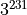
is divided by ?What is the last digit of ? This is same as finding the remainder of the number when divided by 10.
What is the last two digits of ? This is same as finding the remainder of the number when divided by 100.
The basic method to answer these questions is to use the modular arithmeic/congruences background that we have already developed. Later on, we will look at a couple of theorems that can be powerful tools.
Finding last digits
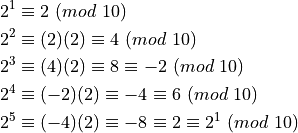
The cycle repeats with periodicity of 4 in the powers.
Hence, the problem is more about finding the remainder when the power is divided by 4.
For example, find the last digit of
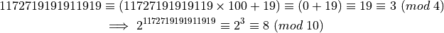
Find the remainder when is divided by .
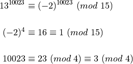
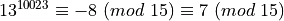
Find the last two digits of
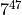
Some observations:
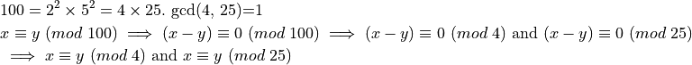
From the section on congruences, we know how to solve such systems of congruences. If a solution exists (which we know exists for our problem), then the solution will be unique modulo which is what we want for the last two digits.
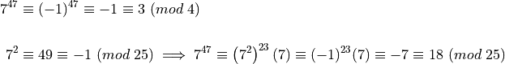
We need to now solve the following system:
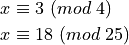
The solutions to the second congruence modulo 100 are
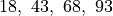
. Not surprisingly, there are 4 solutions with different residues modulo 4.The one that satisfies the first congruence is .
Hence,
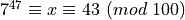